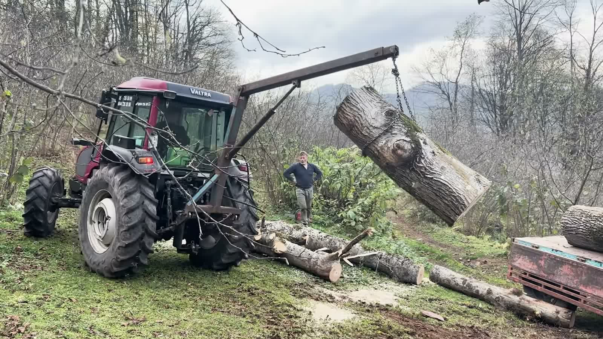
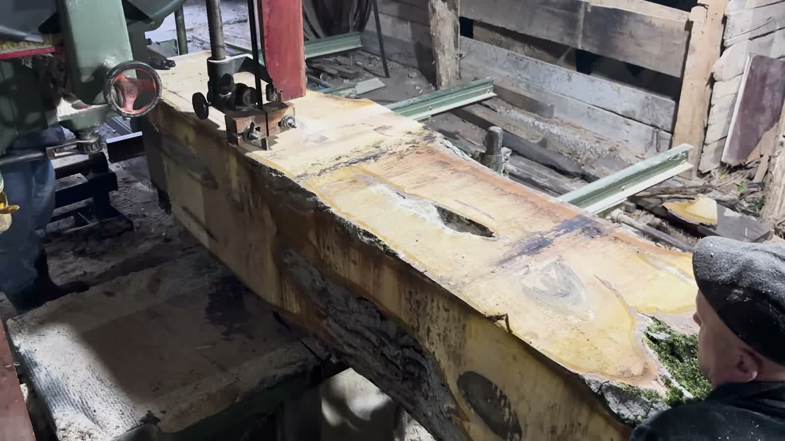

The Life of a Log: From Tree Cutting to Carpentry
Every plank starts as a tree on a hillside. The Life of a Log follows one of them from the moment it is felled to the moment it comes off the saw — a two-minute woodworking journey from tree to craft.
It is a different kind of film for us. The drone is still there, but most of the story happens at ground level, close to the people doing the work. Below is the same journey, step by step.
/ In this story:
At a glance
- Length: 2 minutes 8 seconds
- Stages: Felling, bucking, loading, sharpening, sawing
- Footage: Aerial and ground level
- Narration: None
Step one: felling
The film begins from the air, over a steep green slope where a tall tree has just come down. Felling on a hillside is all about direction. The tree has to fall across the slope, not down it, and land where it can be reached, and the people in the frame have clearly done this many times before.
From the drone you can read the whole scene at once: the stump, the trunk lying along the contour, the track below where the tractor will wait.

Step two: bucking
On the ground a small crew gathers around the trunk. One man works the chainsaw, cutting the tree into sections that can be moved, a job foresters call bucking, while the others clear branches and keep the pieces from rolling downhill.
It is slow, physical work, and nobody in the frame is in a hurry. That rhythm sets the pace for the rest of the film.
A tree becomes timber one pair of hands at a time. We just followed the hands.
/ Parilti Media
Step three: off the hill
Next comes the tractor. A crane arm mounted on the back lifts each section of trunk off the ground, swings it across and lowers it onto a trailer, one log at a time. The pieces are heavy enough that the whole machine leans into every lift.
This is the part of the journey most people never see: the stretch between the forest and the workshop, where a tree turns into timber simply by being moved.

Step four: a sharp blade
The last chapter takes place indoors, at the sawmill, and it starts with the blade rather than the wood. A band-saw blade is a long loop of toothed steel, and before a big log goes through, it is run past a grinding wheel that touches up every tooth in turn. In the film this is the shot with the sparks.
A dull blade wanders in the cut and wastes wood. A sharp one leaves a surface that is already halfway to finished.
Step five: the first cut
Then the log is rolled onto the carriage and pushed through the band saw. The bark falls away as a rough outer slab, and behind it clean, pale boards appear, with the grain of the tree visible for the first time.
How a log is opened decides what the boards will look like: the width, the figure of the grain, where the knots end up. The sawyer reads the log and chooses the line. It takes a few seconds on screen and years to learn.

What happens next
The film stops when the boards come off the saw, but the wood is not ready yet. Freshly cut timber is full of water and has to dry before a carpenter can use it. Traditionally the boards are stacked with thin strips between them so air can move through, and left to season for months; a common rule of thumb is about a year for every inch of thickness.
Only then does the log become a door, a table or a roof beam. Its life as a tree may have lasted decades. Its second life, as something made by hand, can last longer still.
More
films
A Quiet Island in the Blue
Hoynat Island sits a hundred metres off the coast of Perşembe, Ordu. Nobody lives there except the seabirds, and that is exactly why it matters.
Into the Heart of Nature
From a highland pond and open pasture down to the cliffs of the Black Sea: two minutes of nature's untold stories, and a short guide to the landscapes behind them.
Jason Church (Yason Kilisesi), Ordu
A 19th-century stone church on the cape where Jason and the Argonauts are said to have come ashore. The history, the myth and the view from above.